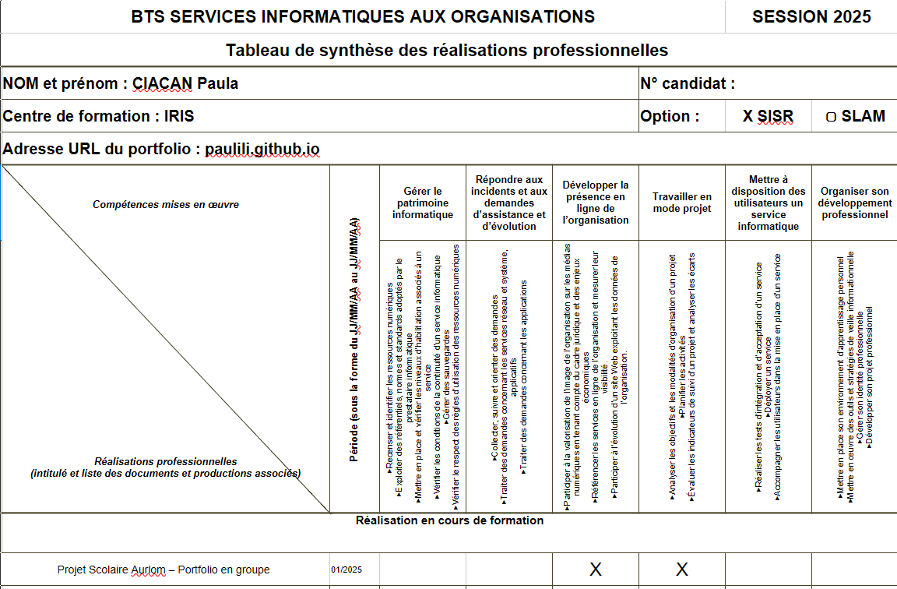

Support et Mise à Disposition de Services Informatiques
L'épreuve E5 valide les compétences liées à la réponse aux attentes des utilisateurs,
à l'accompagnement de la transformation numérique et au
maintien de la qualité des services informatiques au sein d'une organisation.
Mes projets
Compétence E5 · Gestion des incidents et des problèmes
Gestion d'incident — Ticket n°23656 · Changement de station d'accueil
Ce ticket concernait le dysfonctionnement d'une station d'accueil Dell WD19S
chez un utilisateur en alternance. J'ai été responsable de l'ensemble du processus de résolution.
1Diagnostic initial et reproduction du problème en environnement contrôlé
2Contact du support constructeur Dell pour diagnostic avancé et procédure d'échange sous garantie
3Suivi de la livraison et déploiement du nouveau matériel chez l'utilisateur
Ce tableau récapitulatif permet de visualiser l'ensemble des compétences E5
mobilisées et validées au travers de mes différentes activités professionnelles
(stages, alternance chez Jesto Informatique).

Aperçu visuel du Tableau de Synthèse des Compétences E5
Documentation à venir sur la gestion d'un parc de machines virtuelles,
la création de procédures internes, l'installation de postes clients, et d'autres
interventions techniques réalisées en alternance.